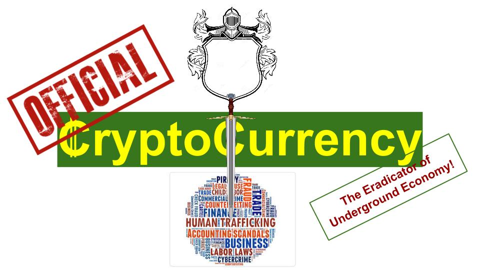

Design of Cryptocurrency for a Sovereign Nation, to replace paper and coin currency

?File:Cryptocurrency - The Eradicator of Underground Economy (final).pdf
Preface
.jpg){kind=link}
This article assumes basic familiarity with the foundational concepts surrounding cryptocurrencies including distributed ledger, blockchain, and the bitcoin protocol. Readers without such background will still be able to follow the proposed design considerations for cryptocurrency and the underlying advantages of cryptocurrency that has the potential to make it a very powerful weapon in the fight to eradicate underground economy (e.g., illicit trade, donations to illegal organizations, counterfeit, evasion of income and sales taxes). Despite its rather provocative title, the focus of this article is more on the design considerations for the rollout of cryptocurrency for a progressive sovereign (as this might prompt relevant authorities, specifically the central bank of the nation, to start engaging on such an initiative) and not as much on eradicating black market transactions (as those are self-realized once cryptocurrency becomes the dominant currency of the land)
Introduction
Although the notion of a sovereign nation adopting a cryptocurrency might be decades away, with recent innovations involving blockchain and Bitcoin, that notion has very much entered the realm of possibility. As most of the currency we deal with currently is already digital, it is easy to confuse digital with cryptocurrency, but the distinction is that digital currency doesn’t lend itself to be exchanged without a trusted intermediary (e.g., bank, credit card company) whereas cryptocurrency acts like digital currency that can be exchanged at a distance (e.g., online) without a trusted intermediary. In essence, cryptocurrency will feel and act like real cash with the exception that it will be available only in virtual/ digital form and every monetary transaction will be stored in the national blockchain/ distributed ledger. If the ability to send money to anonymous digital wallets has led to its notoriety (e.g., illicit trade and donations), then its innate feature of recording every single transaction in the blockchain could form the basis for its redemption by making it a powerful weapon in the war to eradicate underground economy (as underground economy/ black markets can’t thrive under such a transparent monetary regime).
Setting the stage for alternate currencies
It took around 500 years of back and forth for democracy to establish a stable footing in the ancient Greek society. The very first instance of democracy took shape when Cleisthenes got tired of the power struggle cycle, starting with monarch coming to power only to be dethroned or murdered leading to a power struggle before the cycle started all over again, and decided to share some of the decision making powers with the nobles (who had lots of free time at their disposal and hence ended up creating trouble) so that they became part of the solution rather than being part of the problem. Prior to this governance innovation, it must’ve seemed like there is a “natural monopoly” on governing power to be vested with a single individual/ monarch, as there were no examples around (in animal kingdom, including animal herds, ants, or bees) to indicate that any form of “shared” governance is even possible. With the successful rollout of democracy, humanity may have done a one-up on evolution itself. Despite such earlier constraints, most of our world now firmly believes in the ability of democracy to lead to a stable form of government.
Very similar to that, looking around the world now, it looks like there is a “natural monopoly” with governments controlling the monetary policy (including supply of money and setting interest rates). Although that may currently be the case, there is a case to be made for treating money as any other commodity and having it be managed by private sector where by its quality and innovation are constantly tempered and improved by market forces and competition (F. A. Hayek makes a strong case for this in “Denationalization of money” and Walter Bagehot comes very close to recommending that in his well known “Lombard Street”). Although every country in the contemporary world has currency that is managed by its government (or rely on foreign government managed currency such as US dollar or Euro, as the national currency, as done in Ecuador), it wasn’t such a homogenous monetary structure before the 20th century. Counter examples include the private monetary system of Scotland that flourished for over a century (1717-1844, prior to Peel’s Act), New England in US (1820-1860), Canada (1817-1914), and episodes of competitive provision of banknotes in Sweden, Switzerland, France, Ireland, Spain, parts of China, and Australia (for further reading on this topic: “Competing Money Supplies” by Lawrence White). The monetary system of Scotland between 1717 to 1844 is an interesting case to delve a bit more in detail both from the point of how it worked and the impact it had on the Scottish economy (coinciding with the invention of steam engine and the Industrial Revolution). To begin with, Scotland didn’t end up with a competitive and unregulated monetary system due to some grand design or a conscious decision by the government, rather it was sheer neglect (driven by ideological reasons) on the part of England that led to the genesis of a self regulated banking system in Scotland.
The starting point was the chartering of the second bank in Scotland, Royal Bank of Scotland in 1727, that started competing with its older rival, the Bank of Scotland which was created in 1695 by an Act of the Scottish Parliament (one year after the creation of the Bank of England) by issuing its own notes. The Bank of Scotland, despite its official sounding title, was intended to be a commercial bank to provide loans to merchants, noblemen, and to discount commercial bills. The Act of 1695, granted the Bank of Scotland a legal monopoly on banking and right of note issue for 21 years, which the Bank did not make any effort to renew when it lapsed in 1716 as it didn’t believe that the market was big enough to support more than one bank. The Bank of Scotland was unique among European banks at that time, as it was not a state institution and the Act specifically prohibited its lending to the government, under heavy penalty. After the union of the parliaments of England and Scotland in 1707 (with the crowns of the two countries joining in 1603), there was no government of Scotland to meddle with Scottish banking and the British parliament turned a blind eye to the Bank of Scotland’s petitions (as it was perceived to be disloyal with its Jacobite leanings) to stop the chartering of its first rival, the Royal Bank of Scotland in 1727. It was this unique set of circumstances that led to free banking in Scotland. Driven by lack of regulation and free markets, by 1845 there were 19 Chartered banks with with rights to issue notes along side many more provincial and non-issuing banks.
The specie (that the bank notes could be redeemed for) for the Scottish notes was the Bank of England bills in the beginning and later on it was expanded to include Government obligations (similar to current US treasury bills), Bank of England stock, and East India Company stock. In order to promote broader adoption of their own notes, each bank began accepting other banks’ notes, and the need to reduce third party bank risk led to the very first banknotes clearing house so that notes can be netted and settled on a daily basis. Other benefits from the Scottish free banking experiment include interest bearing checking accounts where money can be withdrawn on demand, overdraft accounts (similar to line of credit, in current times), unparalleled economic prosperity, and monetary stability. Despite a few bank failures (e.g., Ayr Bank in 1772) no depositors lost any money because of unlimited bank shareholder liability (this meant that the bank founders and shareholders’ personal assets will be leveraged to pay off debts in the case of bank failure - which is sorely lacking from the current banking system across the world). All these positive outcomes, prompted David Hume, the famous Scottish philosopher, to praise the system “as one of the most ingenious ideas that has been executed in commerce”.
The Scottish system provides a strong basis to make a case for alternate forms of currencies (like the privately issued Scottish Bank Notes) to coexist along with the Bank of England bills (which were in limited circulation in Scotland during that time). The current advent of cryptocurrencies in US (the most popular being Bitcoin) provides a more contemporary example for the demand for as well coexistence of alternate currencies (although at the outset the demand might have been fueled by folks that were looking to trade in illegal paraphernalia or in transferring money to illegal organizations).
Currency features required to meet the needs of central bank(s)
The purpose of this article is not to make a case for free banking or even private currencies (as that may be too much to expect from any of the governments), rather to provide a starting point for a small and enterprising sovereign or island nation to consider replacing its paper/ physical currency with cryptocurrency. If that is perceived as too risky a move, then the sovereign can roll out an alternate currency (managed by the government) that will be in circulation alongside existing paper/ coin currency. It may be quite a few decades before such an experiment might be taken up, but in the meantime it is an interesting thought experiment to consider the various issues that future designers will have to take into account as they develop the cryptocurrency that addresses all the needs of a sovereign nation (to eventually replace its paper currency).
To even be considered for such a monumental responsibility and be accepted by any central bank, cryptocurrencies need to provide the same flexibility and control that paper currencies currently offer. Below is a summary highlighting the key mandates that different central banks are charged with: US Federal Reserve System (the Fed): Long-term price stability and sustainable growth European Central Bank (ECB): Long-term price stability and sustainable growth, with annual inflation target below 2% and preventing excess strength in its currency
- Bank of England (BoE): Maintain annual inflation at 2% (intervene when prices are below or above that level)
- Bank of Japan (BoJ): Price stability and stability of the financial system
- Swiss National Bank (SNB): Ensure price stability while taking the economic situation into account
- Bank of Canada (BoC): Maintaining the integrity and value of the currency and inflation target of 1-3%
- Reserve Bank of Australia (RBA): Stability of currency, maintain full employment, ensure economic prosperity and welfare of the people. Inflation target of 2-3%
- Reserve Bank of New Zealand (RBNZ): To maintain price stability, avoid instability in output, interest rates, and exchange rates. Inflation target of 1.5%
- Monetary Authority of Singapore (MAS): Maintain Singapore's exchange rate (against a basket of currencies), foreign reserves and liquidity in the banking sector
In order to achieve the mandate of either price stability and/ or manage foreign exchange rates, any central bank needs to have the ability to perform the following core actions:
- Increase (or decrease) total stock of money/ monetary base (M0 or MB)
- Increase or decrease money supply (M2)
- Conduct foreign exchange transactions
- Ensure smooth functioning of payments
1) Increase (or decrease) total stock of money/ monetary base (M0 or MB)
If one were to consider monetary base (MB) in the context of US, the quantity of MB has changed only in one direction (has gone up) over the the past 70 years (US $31 billion in 1955 to $1.4 trillion as of September 2015)
{kind=link}
Given that trend, it is safe to assume that MB will only be increased and not decreased, which means that the designers of the cryptocurrency need only concern themselves with providing the ability to increase cryptocoins (and not burden the design with the complexity associated with building the capability to decrease MB, as that feature will likely never be used). Those cryptocoins can be backed by government obligations of the sovereign (for example, in US, the MB is backed by US treasury bills). To enable central banks to increase MB, the cryptocurrency needs to have the capability to grow the total amount of currency as required, unlike Bitcoin where the total amount of currency is fixed at 21 million bitcoins.
The total amount of currency in the Bitcoin protocol is fixed as doing so offers distinct advantages:
- No hacker can introduce or takeaway currency (this makes sense as there is no central authority to regulate the currency)
- Every single bitcoin will have its full history (including its creation that is done programmatically and not due to an external input/ decision) stored within the blockchain, which ensures all the required information for the check/ validation for double spend is available within the blockchain
Despite those advantages, such an immutable approach to cryptocurrency design for a sovereign will not work, as the central bank will require the flexibility to increase MB as the downside to fixed currency base is the unavoidable deflationary cycle that will not be acceptable to the citizens of the sovereign. Similar to genesis block in bitcoin (where the blockchain is kicked off with 50 bitcoins), the central authority (identified by its digital certificate) will be allowed to create new batch of cryptocoins as required. Given that requirement, the designers will have to address the resultant scenario whereby hackers/ attackers cannot create havoc by stealing the central bank’s identity (digital certificates). One design approach for dealing with such a scenario is to put in place the following constraints before new cryptocoins can be created:
- They can be created only once a year - seemingly restrictive, this design constraint should work for any central bank as they won’t need to increase monetary base more often than that
- They can only be created within a specified window of 1 week (e.g., first of March) - this will ensure that all the computer nodes working on the blockchain can be programmed to accommodate/ expect increase in coins while at the same time relegating the hackers to attempt breaking-in during that small window of time each year
- As soon as the request for increase in coins is placed into the blockchain by the central bank digital notification (e.g., email) will be generated and sent to the Central Bank and other independent government departments (e.g., the Treasury)
- The creation of the coins to be considered complete only after those coins are sent to the wallet of Treasury (with its own digital credentials). Once validated, the treasury department has to send those coins back to the central bank after 72 hours, at which point the new coins will be formally added to the blockchain
The first two steps restrict the attackers by minimizing the time available for them to break in. The last two steps in combination should make it virtually impossible for the hackers to succeed. In order for the hackers to be successful, they not only will have to steal the digital certificates of the central bank but also those of the treasury and if they succeed in doing both, they will have to create the coins and wait for 72 hours (and this wait could be longer, if designers deem it necessary to have a longer time to react) after both the central bank and the treasury have been notified of such an attempt (per step 3, from above).
These checks will be implemented and enforced in the programming code for the cryptocurrency that will be rolled out to all the participating computer nodes of the blockchain network that will be performing the required “proof-of-work”, earning transaction fees for successfully creating the cryptocurrency transaction blocks.
2) Increase or decrease money supply (M2)
Increasing the money supply (M2) with cryptocurrencies will be very similar to the situation with paper currency. Typical levers include:
- Increasing monetary base/ MB (covered in the previous section)
- Changing the reserve ratio for bank deposits (banks for cryptocurrencies will work very similar to the current ones, with the exception that depositors can directly send money to others without involving the bank while at the same time having the option of writing a check, to mitigate underlying third party risk)
- Selling or buying government bonds (e.g., US treasury bills) by the central bank - this activity will be conducted very similar to how it is handed with paper currency (with money debited from the buyer of the bonds and credited to the seller of the bonds) except that digital wallets of both the parties will be involved rather than their bank accounts (e.g., in US, they are the accounts of the broker-dealers with the Fed)
- Changing the benchmark central bank interest rate (e.g., Fed funds rate) - the mechanism for enforcing this action will stay unchanged as the interest rate is independent of the underlying currency type
3) Foreign exchange (Forex) transactions
In order for Forex transactions to work with cryptocurrencies, every interested foreign party will need to have a digital wallet which will be used to trade the sovereign's cryptocurrency in exchange for other foreign currencies (e.g., US dollars, GBP). Apart from that, no special treatment should be required for handling cryptocurrencies in Forex transactions, as the Forex transactions will simply be conducted via the digital wallets of the parties involved instead of their bank/ brokerage accounts in the current setting.
4) Smooth functioning of payments
Cryptocurrencies’ raison d'etre is to enable peer to peer payments without the involvement of any third party. Cryptocurrency protocol was born to take the business of payments on to the next level. With the rollout of cryptocurrency as the default currency for a sovereign, below is a summary view of how the payments landscape is likely to change:
- Cash & Coins - replaced by cryptocoins
- Checks - these will become optional for in-country use (to mitigate third party delivery risk) and might be required for sending money to out-of-country parties. Cryptocurrency banks will provide this service as an add-on
- Automated Clearing House (ACH) - will no longer be needed as banks can settle net payments bilaterally using their digital wallets
- Credit cards - requires a bit more clarification on how they are likely to evolve
- Credit card design will change a bit in the context of cryptocurrency. It has to do with the structuring of the credit line that credit cards offer. In a cryptocurrency economy, the digital wallet will itself serve as the credit card in terms of facilitating payments, with credit line aspect of the credit card likely to be addressed via a loan made out to an individual’s wallet by the credit card company. The precise mechanics of the implementation will be left to the credit card company (e.g., if a card has a credit limit of $10,000, the credit card company will issue the loan amount on demand just before the cardholder is about to make a payment, so that he/ she is charged interest only on the amount of credit purchases and not on the entire amount of credit line)
Additional tweaks to the existing cryptocurrency protocol
Apart from meeting the requirements of the central bank, the designers might want to tweak the current cryptocurrency protocol in the following key aspects:
- Store the blockchain (or distributed ledger) on a periodic basis (e.g., daily or hourly) with dedicated storage banks, so that in the case of a black swan event whereby all computer nodes in the network go bust, there is always a reasonably recent snapshot of the blockchain available from which to reconstruct the monetary world
- Collect taxes on commercial transactions (e.g., every sale would result in an automatic credit to the State or Federal treasury/ tax department which is programmed as part of individual cryptocurrency transaction). This feature could be a strong selling point for governments to adopt cryptocurrency as no transaction can go untaxed and also there will be no hiding place for “black money”/ underground economy (as every transaction is recorded in the blockchain)
- Ability to cancel a transaction after is has been sent to a wallet (e.g., by mistake)
- Legal recourse to transfer currency from one wallet to another in the case of lost private key (of an individual’s digital wallet)
- Enforce Anti Money Laundering - require each digital wallet to be registered along with the identifying information (of the individual/ commercial entity) so that every transaction can be tracked to a “known” entity. Any wallets that fail to do so will be monitored and blacklisted (e.g., any “known” wallet sending money to “unregistered” wallets will be notified and the authorities will take appropriate follow up actions)
Resultant efficiencies or systemic upgrades as a result of the rollout of cryptocurrency for a sovereign nation
- No printing/ mint operations
- No counterfeit currency - as there is no physical currency to counterfeit
- No possibility of black money - as every monetary exchange transaction is recorded in the blockchain, making it very easy for the authorities to track the flow of currency right from its genesis to the last digital wallet it was sent to
- Every commercial transaction can be taxed (sales tax) leading to increased treasure revenue
- No cash handling (e.g., armored cash transfer trucks like Brinks, coins and bills counting machines, coin packaging)
- No check processing - as cryptocurrency can exchanged readily from one wallet to the other, without an intermediary
As mentioned earlier, the intent of this article is to serve as a starting point for those that might be interested in formulating a policy paper focused on rolling out cryptocurrency for a sovereign. Although the precise requirements of the sovereign might be different, they should broadly be aligned to the central bank requirements laid out in this article. This is an evolving document incorporating input from others, so do send in your input or feedback as that will help make this document more comprehensive. Despite all the other advantages, the “killer application” that will likely tilt the scales in favor of adopting cryptocurrency is its immense potential to curb illegal activities by recording all monetary transactions in its distributed blockchain - which would be a 180 degree turn from its current predominant use of facilitating illicit trade!
Disclaimer
The opinions presented here are the author’s own personal opinion and do not in anyway reflect views of any of the organizations he is associated with
Bibliography
- Bagehot - Lombard Street: A Description of the Monetary Market
- Bagehot - Lombard Street: A Description of the Monetary Market
- Hayek - Denationalization of Money: The Argument Refined
- Hayek - Denationalization of Money: The Argument Refined
- Wicksell - Interest & Prices
- Wicksell - Interest & Prices
- White - Competing Money Supplies
- White - Competing Money Supplies
- Humphrey - Fisher and Wicksell on the Quantity Theory
- Humphrey - Fisher and Wicksell on the Quantity Theory
- The Federal Reserve System: Purposes & Functions - http://www.federalreserve.gov/pf/pdf/pf_complete.pdf
- Monetary Authority of Singapore - Singapore’s Exchange Rate Policy (2001)
- Monetary Authority of Singapore - Monetary Policy Operations in Singapore (2013)
- Cryptocurrency: The Eradicator of underground economy
About the author
Uday Singh is passionate about Economics and innovative technologies for the financial industry. He has an MBA from Columbia Business School, and served at top tier firms including McKinsey & Co and Credit Suisse. Appreciates your feedback, comments, and further refinements on this topic